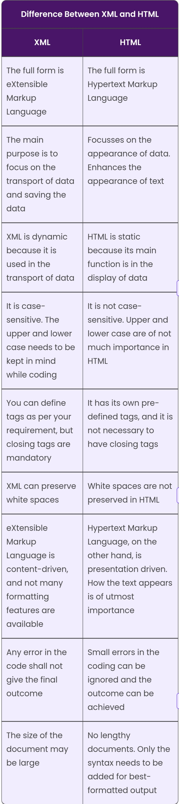
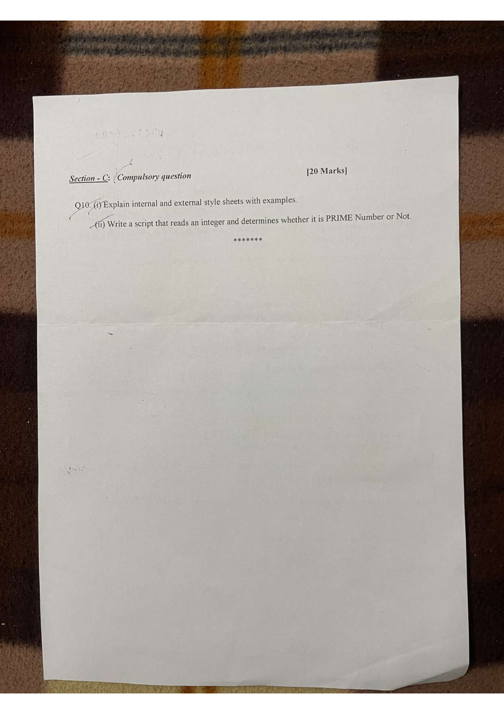
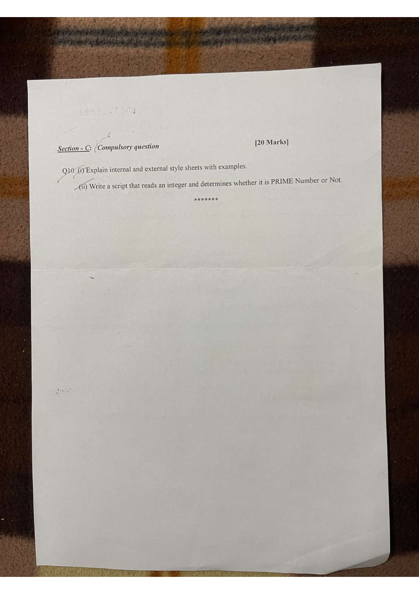

@Debuggers
MCQ
Viva
Web Technology
Web Server : Web communicatation takes place between a client process and the web server. The server process
creates a socket and client process access the server through the socket mechanism.
- HTTP server process is created on a port, which wait for clients to establish TCP (Transmission Control
Protocol) connection.
- An HTTP client initiate a TCP connection with HTTP server at the deginated port.
- The HTTP server accept this connection.
- The HTTP client send a request for a resources to the server.
- The HTTP server closes the TCP connection.
- The HTTP client receive the response containing information and process it.
Web technologies Www is an application that runs the internet and it’s applications. There are several types
of browsers such as Mozilla Firefox, internet explorer, Google Chrome are the hyperlink through www.
TCP/IP ( Transmission control protocol)/(Internet protocol)
5 layers
- Physical layer
- link layer
- Internet layer
- Transport layer
- Application layer
- Physical Layer - This layer deals with the hardware connectivity, voltage, etc..
- Data Link Layer - It is also very similar to the other network model. This cover mac ( media access
control ) that is how can send the data when needed. This also deals with frame formats.
- Internet Layer - It is very important from the context of communication over ans internal. THis layer
function with format of datagram as define in IP and also about the mechanism of forwarding the datagram from
source computer to the final destination via one or more route.
- Transport Layer - There are two main protocols in this layer TCP and UTP. TCP ensure that
communication between the sender and reciever is relaible, error free and is sequence however UTP does not offer
relaiblity. Hence, TCP is a connection oriented protocol and VTP is a connectionless protocol.
- Application Layer - It allows and end user to run various applications on the internet and used the
internet in the different way. These applications are FTP(File transfer protocol), SMTP(Simple main transfer
protocol), TFTP(TRival file transfer protocol), HTTP(HYper text transfer protocol).
Q. What is UNIX and LINUX server?
Linux and Unix is a server running variant of LINUX open source operating system. It is designed to handle the
most demanding business applications such as web services and databases. UNIX/LINUX server provides a strong
foundation for complex, enterprise level data centre and container workload environment ranging bare metal to
machine container including public or private cloud. Its is open source software OS, build around the LINUX, UNIX
kernel. LINUX is also leading OS on servers and popular on mainframe and supercomputers. LINUX server have
virtually no downtimes. It gives software developers a degree of control when creating certain softwares as a
service tool.
.jpg)
.jpg)
File organisation
- Ordinary file :- An ordinary file consists of characters stored in the disk.
- Special file :- A special file is always representing devices such as terminal, printer etc.
- Directory:- It is a collection of files and other sub directories.
- Bin :- It contains executable files for booting the process and system software.
- Dev :- It contains the special files that represent devices like terminal, console, printer etc.
- Home :- The route of the subtree of user directories. After logging, user is placed in the default directories is called home / home directories.
.jpg) HTML:-
HTML:- An HTML document is a text file that contains text and mark-up called "tags".
HTML elements:- :HTML elements are the fundamentals building blocks of web pages. An element consist of a tag, it is a attributes and content. The content of the tag may be simple text, or maybe one or more tags both. These elements are organised in a tree , like structure.
The root element of HTML documents
<html>
<head>…………</head>
<body>…………</body>
</html>
OS commands
- ls :- Displays information about files in the current directory.
- mkdir :- Creates a directory.
- rmdir :- Removes empty directories from the directory lists.
- chmod :- allows an administrator to set or modify a file permission.
- cd :- To navigate between different folders.
HTML commands
<html>: beginning and end of an HTML document.
<header>: header information of the document.
<title>: specifies the title of the page.
<body>: contains the main content.
<h1> to <h6>: define headings of different sizes.
<p>: This tag defines a paragraph of text.
<a>: creates a hyperlink.
<img>: inserts an image into the page.
<ul>: create an unordered list.
<ol>: create an ordered list.
<br>: inserts a single line break
<hr>: the element is displayed as a horizontal rule that is used to separate content.
- 
Steps for Web Designing
- Goal identification
- Scope definition
- Site creation
- Content creation
- Visual elements
- Testing
- Launch
1. Goal identification: Where we work with the client to determine what goals the new website needs to fulfill, that is, what is its purpose?
2. Scope definition: Once we know the site’s goal, we can define the scope of the project, that is, what web pages and features the site requires to fulfill the goals.
3. Site creation: With the scope well defined, we can start digging into the site map, defining how the contents and features appear. We define the scope definition with intermediate.
4. Content creation: Now that we have a bigger picture of the site in mind, we can start content creation for individual pages and keep the page’s focus on a single topic.
5. Visual elements: With the site architecture and a few contents in place, we can start working on visual ways.
6. Testing: We have got all our pages and defined how they are displayed to the site visitor so as to make sure that it all works.
7. Launch: Once everything is working successfully, it’s time to plan and execute our website launch.
IP Addresses and their Classes
Internet protocol in the TCP/IP protocol should assign a new address called IP Address, to each device participating in a computer network. An IP Address serves basically host network interfaces and the location address.
IPv4 = 32 bits address
IPv6 = 128 bits address
But due to tremendous network growth in the internet, a new system is used that is IPv6.
IP Address is usually written using four decimal numbers. Each represents 8 bits in the range 0-255.
Ex: 203.197.107.107
Classes of IP Address
- Class A: 0-127
- Class B: 128-191
- Class C: 192-223
- Class D: 224-239
- Class E: 240-255
DNS server (Domain Name System Servers)
DNS servers or Domain Name System servers allow us to interact with devices on the internet without actually remembering the string of the number. Each computer on the internet has a unique address called as IP address, which is similar to the address required for sending a direct mail.
107.218.10.33 is an IP Address consisting of four decimal numbers in the range 0-255.
Purpose of DNS
- DNS helps with the resolving of domain name to IP Addresses.
- It identifies and locates different hosts on the internet such that they can communicate successfully.
- DNS is used for routing services.
- It is used for the verification of hosts, emails, and services.
Previous Year Paper
 

IMPORTANT QUESTION
1.Designing a Webpage
Designing a webpage involves several steps to ensure it meets both aesthetic and functional criteria. Here's a breakdown of the process:
- Define Objectives and Audience:
- Understand the purpose of the webpage (e.g., informational, e-commerce).
- Identify the target audience and their preferences to tailor the design accordingly.
- Research and Planning:
- Explore existing websites for inspiration and to understand design trends.
- Plan the layout and structure of the webpage, considering user experience and navigation flow.
- Choose a Development Platform:
- Decide whether to use a website builder or code from scratch using HTML, CSS, and JavaScript.
- Create Wireframes and Mockups:
- Develop wireframes to visualize the layout and placement of elements.
- Design high-fidelity mockups to refine the visual appearance and user interface.
- Content Creation and Organization:
- Generate or gather content such as text, images, and multimedia elements.
- Organize content logically to ensure easy navigation and comprehension for users.
- Coding and Implementation:
- Write HTML to create the structure and content of the webpage.
- Use CSS to style the webpage, including layout, colors, typography, and responsive design.
- Implement JavaScript for interactivity and functionality, such as forms and animations.
- Testing and Optimization:
- Test the webpage across different browsers and devices for compatibility and responsiveness.
- Check for errors, broken links, and usability issues.
- Optimize the webpage for performance by minimizing file sizes and improving loading times.
- Launch and Maintenance:
- Publish the webpage for public access.
- Monitor user feedback and analytics to identify areas for improvement.
- Regularly update content and make necessary adjustments to keep the webpage relevant and engaging.
2. Explain TCP/IP
TCP/IP (Transmission Control Protocol/Internet Protocol):
- TCP/IP is a set of networking protocols used for communication over the internet.
- TCP (Transmission Control Protocol) manages the sending and receiving of data packets between devices, ensuring reliability and error correction.
- IP (Internet Protocol) handles the addressing and routing of data packets across networks, enabling devices to communicate with each other.
- TCP/IP provides a standardized framework for transmitting data between devices on a network, making it a fundamental component of internet communication.
3. Structure of Unix and Linux
The structure of Unix and Linux operating systems is organized in a hierarchical manner, typically following the Filesystem Hierarchy Standard (FHS). Here's a breakdown of the key components and structure:
- Root Directory ("/"):
- At the top level is the root directory, denoted by a forward slash ("/").
- The root directory contains all other directories and files in the system.
- Basic Directories:
- /bin: Contains essential executable binaries (commands) used by all users.
- /boot: Contains boot loader files and kernel images.
- /dev: Contains device files representing hardware devices.
- /etc: Contains system-wide configuration files.
- /home: Contains user home directories.
- /lib and /lib64: Contains shared library files used by executables in /bin and /sbin.
- /media: Mount point for removable media devices (e.g., USB drives).
- /mnt: Mount point for temporary file systems.
- /opt: Contains optional software packages.
- /proc: Contains system process information and kernel parameters (virtual file system).
- /root: Home directory for the root user.
- /run: Contains system runtime data.
- System Administration Directories:
- /sbin: Contains system administration binaries (commands) for root users.
- /srv: Contains data for services provided by the system.
- /sys: Contains information about the system's hardware devices and drivers (virtual file system).
- /tmp: Contains temporary files.
- /usr: Contains user binaries, libraries, documentation, and other resources.
- /var: Contains variable data, such as log files, spool files, and temporary files generated by programs.
3. Differences between XML and HTML
Purpose:
- XML: Used for storing and transporting structured data, content-agnostic.
- HTML: Used for creating web pages, specifically designed for presenting content on the internet.
Syntax:
- XML: Strict syntax rules, including properly nested tags with opening and closing tags.
- HTML: Less strict syntax, predefined tags with some flexibility in nesting.
Content:
- XML: Represents any structured data, including text, numbers, and hierarchical structures.
- HTML: Defines the structure and content of web documents, including text, images, links, forms, etc.
Usage:
- XML: Widely used for data storage, configuration files, and data interchange between systems.
- HTML: Standard markup language for web development, interpreted by web browsers to render web pages.
Extensibility:
- XML: Highly extensible, allows users to define custom tags and document structures.
- HTML: Less extensible, primarily designed for web document structure, limited customization compared to XML.
4. Web Server
A web server is a software application or hardware device that serves web content to users over the internet.
It receives requests from client web browsers (like Chrome, Firefox) and responds by delivering web pages, images, videos, or other content stored on the server.
Common web server software includes Apache HTTP Server, Nginx, Microsoft Internet Information Services (IIS), and LiteSpeed Web Server.
Web servers use protocols like HTTP (HyperText Transfer Protocol) and HTTPS (HTTP Secure) for communication with clients, ensuring secure data transfer.
5. IP Address and Classes
An IP address is a unique numerical label assigned to each device connected to a computer network that uses the Internet Protocol for communication.
IP addresses are divided into classes based on the range of values in the first octet:
- Class A (1-126)
- Class B (128-191)
- Class C (192-223)
- Class D (224-239)
- Class E (240-255)
Classes A, B, and C are used for host addressing, while Class D is reserved for multicast addressing, and Class E is reserved for experimental use.
IP addresses allow devices to communicate with each other over a network, enabling data transmission and internet connectivity.
6. DNS (Domain Name System)
DNS is a hierarchical decentralized naming system that translates human-readable domain names (e.g., www.example.com) into IP addresses.
It provides a way to map domain names to IP addresses, allowing users to access websites using easy-to-remember domain names instead of numeric IP addresses.
DNS operates through a distributed network of DNS servers, which store and manage domain name records (such as A records, CNAME records, MX records).
When a user enters a domain name into a web browser, the DNS resolver queries DNS servers to obtain the corresponding IP address, enabling the browser to connect to the requested website.
7. Explain Form Elements in HTML
HTML form elements allow creating interactive forms on web pages.
Input fields include text, password, email, number, checkbox, and radio button.
Text areas enable multi-line text input.
Buttons allow form submission, resetting, or triggering JavaScript functions.
Dropdown menus provide a list of options for selection.
Labels describe input fields for better accessibility.
These elements collectively facilitate the creation of user-friendly and interactive forms on web pages.
8. Table Tags in HTML
HTML table tags are used to create structured tabular data on web pages.
The main table tags include <table>, <tr>, <td>, and <th>.
<table>: Defines a table.<tr>: Defines a row within a table.<td>: Defines a cell within a row for regular data.<th>: Defines a cell within a row for table headers.
Additional tags like <thead>, <tbody>, and <tfoot> can be used to structure the table header, body, and footer sections respectively.
Attributes like colspan and rowspan can be used to span cells across multiple rows or columns.
9. List Tags in HTML
HTML list tags are used to create lists of items on web pages.
There are three main types of list tags: <ul>, <ol>, and <li>.
<ul>: Defines an unordered list, where items are marked with bullets.<ol>: Defines an ordered list, where items are marked with numbers or letters.<li>: Defines a list item within <ul> or <ol>.
Attributes like type and start can be used to customize the list style and starting number for ordered lists.
Nested lists can be created by placing lists within list items (<ul> or <ol> within <li>).
10. CSS (Cascading Style Sheets)
CSS is a stylesheet language used to describe the presentation of a document written in HTML or XML.
It defines the styles, layout, and appearance of HTML elements on a web page, including colors, fonts, margins, and positioning.
Ways to Include CSS in HTML:
- Inline CSS:
Inline CSS is applied directly to an HTML element using the style attribute.
Example:
<p style="color: red; font-size: 16px;">This is a paragraph with inline CSS.</p>
- Internal CSS:
Internal CSS is defined within the <style> element in the <head> section of an HTML document.
Example:
<head>
<style>
p {
color: blue;
font-size: 18px;
}
</style>
</head>
<body>
<p>This is a paragraph with internal CSS.</p>
</body>
- External CSS:
External CSS is defined in a separate CSS file and linked to an HTML document using the <link> element.
Example:
<head>
<link rel="stylesheet" type="text/css" href="styles.css">
</head>
Contents of "styles.css":
p {
color: green;
font-size: 20px;
}
11. Selectors in HTML
Selectors are used in CSS (Cascading Style Sheets) to target and style HTML elements.
They allow developers to apply styles to specific elements or groups of elements on a webpage.
Selectors can target elements based on various criteria such as tag name, class, ID, attributes, and hierarchy.
There are different types of selectors in CSS:
- Element Selector: Targets HTML elements based on their tag name.
- Class Selector: Targets elements with a specific class attribute.
- ID Selector: Targets a single element with a specific ID attribute.
Selectors can be combined and nested to create more specific and targeted styles.
CSS selectors play a crucial role in styling HTML elements and creating visually appealing and user-friendly web pages.
12. Program in JavaScript to Find Area of Circle
function calculateArea(radius) {
return Math.PI * radius * radius;
}
const radius = 5;
const area = calculateArea(radius);
console.log("Area of the circle:", area.toFixed(2));
13. Program in JavaScript to Add Two Numbers and Take Input from User
function addNumbers(num1, num2) {
return num1 + num2;
}
const number1 = parseFloat(prompt("Enter the first number:"));
const number2 = parseFloat(prompt("Enter the second number:"));
const sum = addNumbers(number1, number2);
console.log("Sum of", number1, "and", number2, "is", sum);
14. Explanation of Function in JavaScript with Example
Functions in JavaScript are reusable blocks of code that perform a specific task.
They encapsulate a set of instructions and can accept input parameters and return values.
Functions in JavaScript are declared using the function keyword, followed by the function name and a pair of parentheses containing optional parameters.
Parameters are variables that hold values passed to the function when it is called.
Functions can be called or invoked by using the function name followed by parentheses, optionally passing arguments.
Functions can have local variables declared inside them, which are accessible only within the function's scope.
Functions can also have a return statement that specifies the value to be returned to the caller.
15. Program in JavaScript to Check if Number is Even or Odd
// Function to check if a number is even or odd
function checkEvenOrOdd(number) {
if (number % 2 === 0) {
return "Even";
} else {
return "Odd";
}
}
// Test the function
const numberToCheck = 7;
const result = checkEvenOrOdd(numberToCheck);
console.log(numberToCheck + " is " + result);
16. Program in JavaScript to Find Factorial
// Function to calculate factorial of a number
function calculateFactorial(number) {
if (number === 0 || number === 1) {
return 1;
} else {
let factorial = 1;
for (let i = 2; i <= number; i++) {
factorial *= i;
}
return factorial;
}
}
// Test the function
const numberToFindFactorial = 5;
const factorial = calculateFactorial(numberToFindFactorial);
console.log("Factorial of " + numberToFindFactorial + " is " + factorial);
17. Difference between GET and POST Method
GET Method:
- GET requests are used to retrieve data from a server.
- Data is sent in the URL as query parameters.
- Parameters are appended to the URL after a question mark (?), separated by ampersands (&).
- GET requests have limitations on the amount of data that can be sent (limited by the maximum URL length supported by browsers).
- GET requests can be bookmarked and cached by browsers, making them suitable for retrieving static data or navigating between pages.
- GET requests are idempotent, meaning they can be repeated without causing different results.
POST Method:
- POST requests are used to submit data to a server for processing or storage.
- Data is sent in the body of the request.
- POST requests can send large amounts of data without limitations on the size.
- POST requests are not bookmarked or cached by browsers, making them suitable for sending sensitive or dynamic data, such as form submissions.
- POST requests are not idempotent by default, meaning they can cause different results if repeated. However, they can be made idempotent by implementing server-side logic.
18. Advantages of CSS:
Advantages of CSS:
- Separation of Concerns: CSS allows for separation of content from presentation, making it easier to maintain and update the visual appearance of a website without altering the underlying HTML structure.
- Consistency: CSS enables consistent styling across multiple web pages by applying the same styles to different elements, ensuring uniformity in design and layout.
- Flexibility: CSS offers a wide range of styling options, including colors, fonts, margins, padding, borders, and positioning, allowing developers to create diverse and visually appealing designs.
- Efficiency: CSS enables efficient styling of web pages by applying styles globally or targeting specific elements, reducing redundancy and improving code readability.
- Accessibility: CSS supports accessibility features such as screen reader compatibility, alternative text for images, and keyboard navigation, making web content more accessible to users with disabilities.
- Faster Page Loading: CSS files can be cached by browsers, reducing page load times and bandwidth usage, especially for repeated visits to a website.
Uses of CSS:
- Styling HTML Elements: CSS is primarily used for styling HTML elements to control their appearance, including colors, fonts, sizes, margins, padding, borders, and backgrounds.
- Responsive Web Design: CSS facilitates responsive web design by using media queries and flexible layout techniques to adapt web pages to different screen sizes and devices, ensuring optimal viewing experience on desktops, tablets, and smartphones.
- Layout Control: CSS provides layout control through techniques like floats, flexbox, and grid, allowing developers to create complex page layouts with multiple columns, grids, and positioning.
19. Drawbacks of HTML:
Drawbacks of HTML:
- Limited Styling and Presentation Options: HTML alone lacks advanced styling features like gradients, animations, and complex layouts.
- Semantic Markup Complexity: Maintaining semantic markup in HTML can be complex as web pages become more intricate.
- Accessibility Challenges: Ensuring full accessibility compliance can be difficult, requiring careful implementation and testing.
- Cross-Browser Compatibility: Ensuring consistent rendering across different browsers and versions can be challenging due to inconsistencies.
- Limited Interactivity: HTML has limited capabilities for creating interactive and dynamic web applications without additional technologies like JavaScript.
20. How do you define grouping in CSS:
Defining Grouping in CSS:
Grouping in CSS allows you to apply the same style rules to multiple selectors. Multiple selectors can be grouped together, separated by commas. The same style rules will then be applied to all elements targeted by the grouped selectors. Grouping reduces redundancy and improves code readability.
Example:
h1, h2, h3 {
color: blue;
font-size: 20px;
}
21. What are inline elements in CSS:
Inline elements are HTML elements that are displayed inline, meaning they flow along with surrounding content and do not start on a new line. Examples of inline elements include <span>, <a>, <img>, <strong>, <em>, <br>, and <input>. Inline elements only occupy the space necessary for their content and cannot have width and height applied to them directly. They can be styled with CSS properties such as color, font, and text-decoration.
22. In how many ways can you select HTML tags:
By Tag Name: Selects all elements with a specific tag name.
By Class Name: Selects elements with a specific class attribute.
By ID: Selects a single element with a specific ID attribute.
By Attribute: Selects elements based on specific attribute values.
Combining Selectors: Combines multiple selectors to apply styles to different elements.
Descendant Selector: Selects elements that are descendants of a specific parent element.
Adjacent Sibling Selector: Selects elements immediately preceded by a specific sibling element.
Child Selector: Selects elements that are direct children of a specific parent element.
These selectors offer versatile ways to target HTML elements for styling in CSS.
23. Describe the method of changing font using CSS:
Font Family Property:
- Use the
font-family property to specify the font family for text.
- It allows you to define a prioritized list of font family names or generic font family keywords.
Specify Font Family Names:
- Specify the font family names enclosed in quotation marks, separated by commas.
- If the specified font is not available, the browser will use the next font in the list.
Using Generic Font Families:
- Alternatively, you can use generic font family keywords like
sans-serif, serif, monospace, cursive, or fantasy.
- These keywords represent font families that fall under certain styles or classifications.
Using Google Fonts:
- You can also use external fonts provided by services like Google Fonts.
- Include a link to the Google Fonts stylesheet in your HTML document, and then specify the font family in your CSS.
24. Demonstrate with an example how inner elements inherit style information from outer elements in CSS:
HTML:
<!DOCTYPE html>
<html lang="en">
<head>
<meta charset="UTF-8">
<meta name="viewport" content="width=device-width, initial-scale=1.0">
<title>Inheritance Example</title>
<link rel="stylesheet" href="styles.css">
</head>
<body>
<div class="outer">
<p class="inner">This is an inner paragraph.</p>
</div>
</body>
</html>
CSS:
.outer {
font-family: Arial, sans-serif;
color: blue;
}
.inner {
font-style: italic;
}